IES Valle del Alberche

🗺️ Ubicación en el currículo
Este tema se integra en el Bloque C. Vibraciones y ondas del currículo de Física de 2.º de Bachillerato. En la relación de bloques y temas aportada para el Decreto 40/2022 (BOCYL-D-30092022-4), aparece como C6. Formación de imágenes y sistemas ópticos.
En este tema estudiaremos: lentes delgadas convergentes y divergentes, espejos planos y esféricos cóncavos y convexos, ecuaciones de formación de imágenes, aumento lateral, potencia de una lente, trazado de rayos y aplicaciones como la lupa y el proyector.
🎯 Objetivos de aprendizaje
- Comprender el modelo de lente delgada y las aproximaciones de la óptica geométrica paraxial.
- Distinguir lentes convergentes y divergentes, y espejos cóncavos y convexos, atendiendo al signo de su distancia focal.
- Aplicar la ecuación de las lentes delgadas y la de los espejos esféricos para calcular la posición de la imagen.
- Calcular el aumento lateral y deducir el tamaño, la orientación y la naturaleza real o virtual de la imagen.
- Construir diagramas de rayos principales y justificar gráficamente la formación de imágenes.
- Relacionar la distancia focal con la potencia de una lente y expresar esta última en dioptrías.
- Explicar el funcionamiento de una lupa y de un proyector mediante la posición del objeto respecto al foco.
- Resolver problemas de EBAU/PAU sobre lentes y espejos, incluyendo situaciones con imagen real en pantalla, imagen virtual y dos posiciones de una lente.
📐 Criterio de signos DIN 1335 (para lentes y espejos)
Norma de referencia: DIN 1335 Geometrische Optik — Bezeichnungen und Definitionen. La luz se supone que viaja siempre de izquierda a derecha. Las distancias se miden desde el vértice o centro óptico del sistema, y el sentido positivo es el de avance de la luz (hacia la derecha).
| Magnitud | Signo DIN | Interpretación |
|---|---|---|
| \(s\) (distancia objeto) | Negativo si el objeto está a la izquierda (objeto real) | \(s<0\) para objeto real |
| \(s'\) (distancia imagen) | Positivo si la imagen está a la derecha | En lentes: \(s'>0\) ⇒ imagen real (derecha); \(s'<0\) ⇒ virtual (izquierda). En espejos: \(s'>0\) ⇒ imagen virtual (detrás); \(s'<0\) ⇒ real (delante, misma izquierda) |
| \(f'\) (focal imagen) | Positivo en lentes convergentes; negativo en divergentes | \(f'>0\) ⇒ convergente; \(f'<0\) ⇒ divergente |
| \(f\) (focal objeto) | \(f=-f'\) | En lentes convergentes \(f<0\); en divergentes \(f>0\) |
| \(f\) (espejo) | Cóncavo: \(f<0\); convexo: \(f>0\) | \(f=R/2\) con \(R\) positivo si el centro está a la derecha; en cóncavo \(R<0\Rightarrow f<0\) |
| \(y,\,y'\) (tamaños) | Positivo por encima del eje; negativo por debajo | El signo de \(y'\) da la orientación |
Lentes delgadas: \(\displaystyle \frac{1}{s'}-\frac{1}{s}=\frac{1}{f'}\)
Espejos esféricos: \(\displaystyle \frac{1}{s'}+\frac{1}{s}=\frac{1}{f}\)
Aumento lateral: \(\displaystyle A=\frac{y'}{y}=\frac{s'}{s}\)
Potencia: \(P=1/f'\) (con \(f'\) en metros). En espejos, \(f=R/2\).
Relación con el convenio real-positivo: el convenio DIN no etiqueta por “real/virtual”, sino por posición respecto al sentido de la luz. Por eso un objeto real tiene \(s<0\) y una imagen real en una lente tiene \(s'>0\), mientras que en un espejo una imagen real (delante) tiene \(s'<0\). Las fórmulas y los signos de esta página siguen DIN 1335.
📚 Contenido teórico
1Óptica geométrica y formación de imágenes.
La óptica geométrica describe la propagación de la luz mediante rayos. En el modelo utilizado en este tema, los rayos se propagan en línea recta en medios homogéneos y la formación de imágenes se estudia con sistemas centrados: lentes delgadas y espejos esféricos.
La aproximación paraxial considera rayos próximos al eje óptico y con pequeñas inclinaciones. En estas condiciones se pueden utilizar las ecuaciones de Gauss para relacionar la posición del objeto, la posición de la imagen y la distancia focal.
Imagen real: se forma por la intersección efectiva de los rayos (o de sus rayos reflejados). Puede recogerse sobre una pantalla. En los casos usuales de un objeto real, aparece invertida.
Imagen virtual: se forma por la intersección de las prolongaciones de los rayos. No puede recogerse directamente sobre una pantalla. En los ejemplos habituales de este tema suele ser derecha.
2Lentes delgadas: convergentes y divergentes.
Una lente delgada es un sistema óptico refractor cuyo espesor se considera despreciable frente a los radios de curvatura. En una lente convergente, un haz de rayos paralelos al eje emerge convergiendo en el foco imagen. En una lente divergente, emerge divergiendo como si procediera del foco situado en el lado del objeto.
Más gruesa en el centro que en los bordes en los ejemplos habituales. Tiene \(f'>0\) (DIN) y potencia positiva.
Más delgada en el centro que en los bordes en los ejemplos habituales. Tiene \(f'<0\) (DIN) y potencia negativa.
Se identifican dos focos principales, situados sobre el eje óptico y a igual distancia del centro óptico en el modelo de lente delgada en aire. En DIN, \(f=-f'\).
La distancia focal imagen \(f'\) es la distancia entre el centro óptico y el foco imagen. Su signo permite distinguir el comportamiento convergente o divergente con el convenio DIN adoptado en este documento.
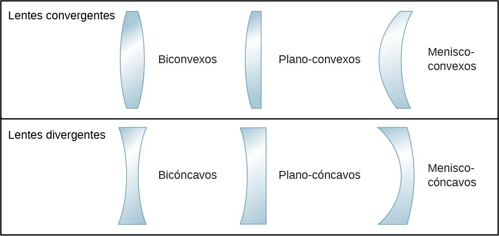
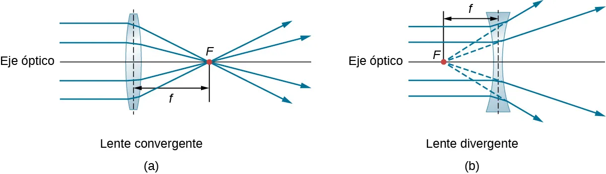
3Ecuación de la lente delgada (DIN).
Para una lente delgada, la posición del objeto \(s\), la posición de la imagen \(s'\) y la distancia focal imagen \(f'\) se relacionan mediante:
En esta página se usa el convenio DIN 1335: \(s<0\) para un objeto real (a la izquierda); \(s'>0\) para una imagen real en una lente (a la derecha) y \(s'<0\) para una imagen virtual (a la izquierda); \(f'>0\) para una lente convergente y \(f'<0\) para una lente divergente. Además, \(f=-f'\).
\(s'>0\): imagen real, a la derecha de la lente (lado de salida).
\(s'<0\): imagen virtual, a la izquierda de la lente (mismo lado que el objeto).
La ecuación puede despejarse para hallar cualquiera de las tres magnitudes. Por ejemplo:
4Espejos planos y esféricos: cóncavos y convexos (DIN).
Un espejo plano produce una imagen virtual, derecha y del mismo tamaño que el objeto. La imagen se encuentra a la misma distancia detrás del espejo que el objeto delante de él. En DIN, \(s'=-s\) y \(A=1\).
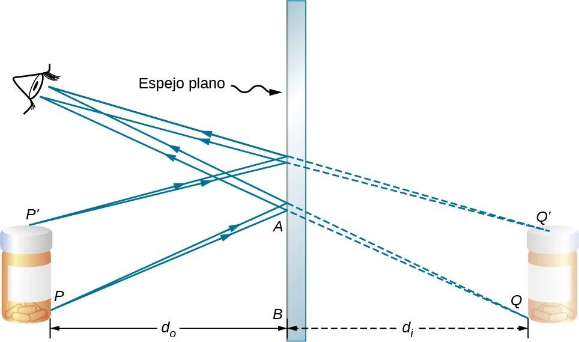
Los espejos esféricos se clasifican en:
- Cóncavos: la superficie reflectante es la parte interior de la esfera. Son convergentes para rayos paralelos y, en DIN, tienen \(f<0\) (y \(R<0\)).
- Convexos: la superficie reflectante es la parte exterior de la esfera. Son divergentes para rayos paralelos y, en DIN, tienen \(f>0\) (y \(R>0\)).
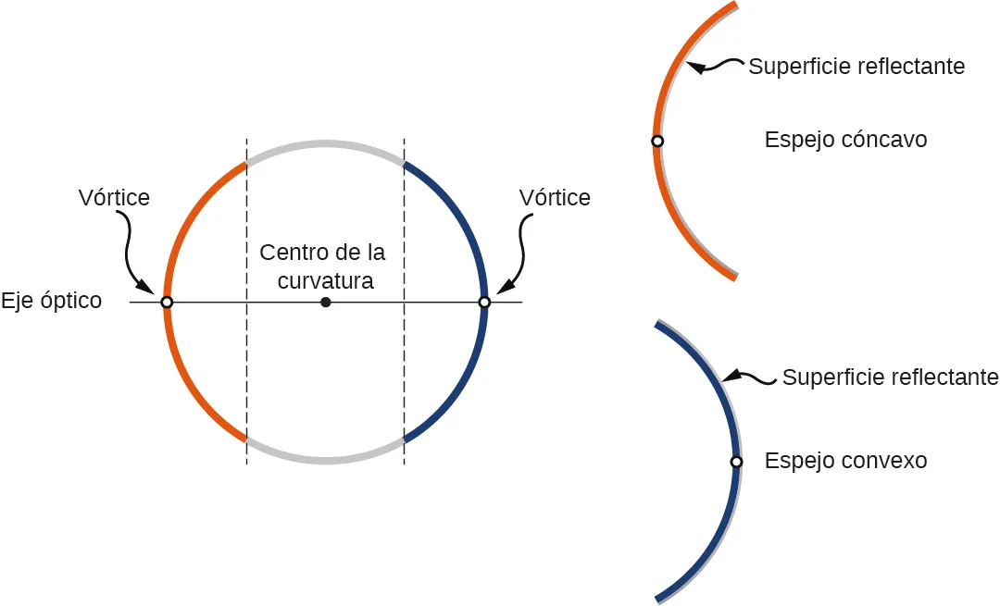
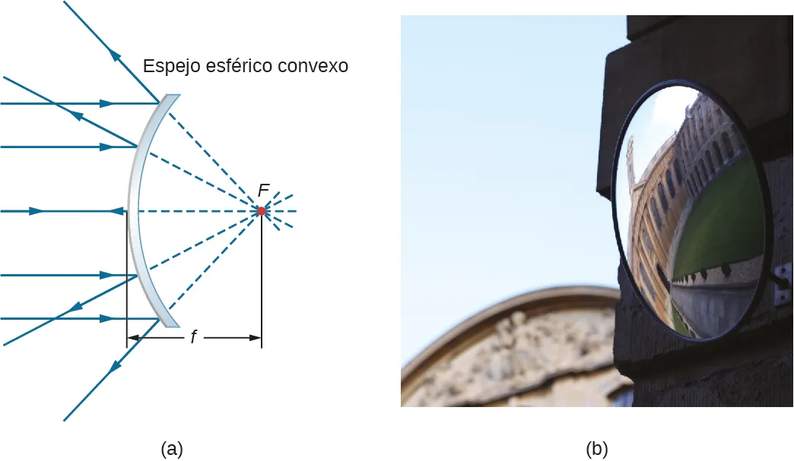
En un espejo esférico paraxial, el foco está a mitad de camino entre el vértice \(V\) y el centro de curvatura \(C\):
La ecuación de los espejos esféricos en DIN es:
Con el convenio DIN, \(s<0\) para un objeto real (delante del espejo, a la izquierda). \(s'>0\) si la imagen es virtual (detrás del espejo) y \(s'<0\) si es real (delante del espejo, misma zona que el objeto). Espejo cóncavo: \(f<0\). Espejo convexo: \(f>0\).
5Aumento lateral: tamaño y orientación (DIN).
El aumento lateral compara la altura de la imagen con la altura del objeto:
- \(A>0\): imagen derecha respecto al objeto.
- \(A<0\): imagen invertida.
- \(|A|>1\): imagen mayor.
- \(|A|<1\): imagen menor.
- \(|A|=1\): imagen del mismo tamaño.
El tamaño de la imagen se calcula con \(y'=A\,y\). El signo de \(y'\) indica la orientación respecto al eje óptico; su módulo expresa la altura.
6Potencia de una lente (DIN).
La potencia de una lente delgada es la inversa de su distancia focal imagen expresada en metros:
Su unidad es la dioptría (D), equivalente a \(\text{m}^{-1}\). Una lente convergente tiene \(f'>0\) y potencia positiva; una lente divergente, \(f'<0\) y potencia negativa.
Para calcular la potencia hay que expresar siempre \(f'\) en metros. No se debe introducir la focal en centímetros directamente en \(P=1/f'\) si se quiere obtener dioptrías.
7Trazado de rayos en lentes.
Para construir una imagen basta con trazar dos rayos principales desde la punta del objeto. El punto donde se cortan los rayos refractados (imagen real) o sus prolongaciones (imagen virtual) determina la punta de la imagen.
Lente convergente:
- Un rayo paralelo al eje emerge pasando por el foco imagen \(F'\).
- Un rayo que atraviesa el centro óptico no cambia apreciablemente de dirección.
- Un rayo que llega dirigido hacia el foco objeto \(F\) emerge paralelo al eje.
Lente divergente:
- Un rayo paralelo al eje emerge divergiendo como si procediera del foco imagen \(F'\) (situado a la izquierda en DIN para una divergente).
- Un rayo que atraviesa el centro óptico continúa sin desviarse.
- Un rayo dirigido hacia el foco objeto \(F\) emerge paralelo al eje.
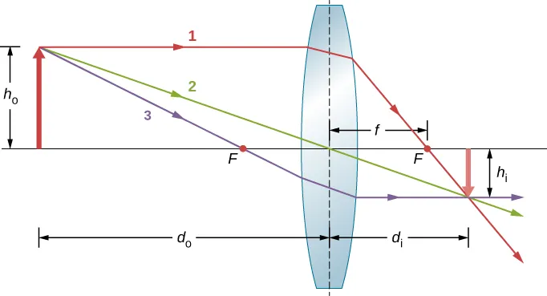
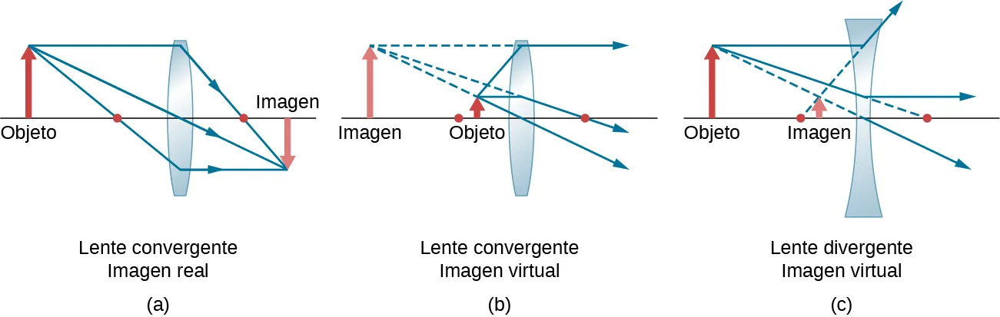
8Trazado de rayos en espejos esféricos.
Espejo cóncavo: un rayo paralelo al eje se refleja pasando por el foco; un rayo que pasa por el foco se refleja paralelo al eje; un rayo dirigido hacia el centro de curvatura se refleja sobre sí mismo.
Espejo convexo: un rayo paralelo al eje se refleja divergiendo como si procediera del foco virtual situado detrás del espejo; un rayo dirigido hacia ese foco se refleja paralelo; un rayo dirigido hacia el centro de curvatura virtual se refleja sobre sí mismo.
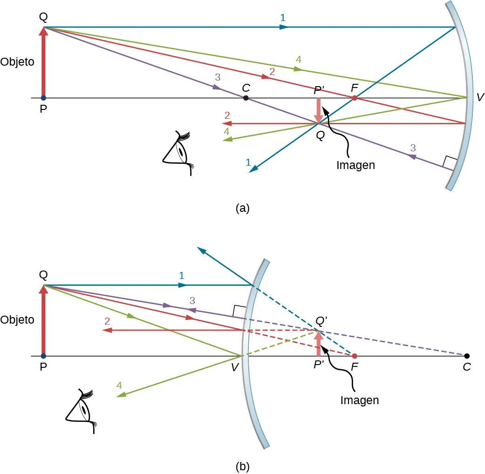
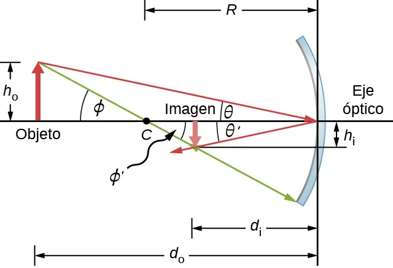
9Resumen de imágenes en lentes y espejos.
La siguiente tabla resume los resultados para un objeto real en el criterio DIN. Se considera el comportamiento paraxial y los casos habituales de lentes delgadas y espejos esféricos. Recuerda que en DIN un objeto real tiene \(s<0\).
| Sistema | Posición del objeto (DIN) | Naturaleza y orientación | Tamaño |
|---|---|---|---|
| Lente convergente (\(f'>0\)) | \(|s|>2f'\) | Real e invertida (\(s'>0\)) | Menor |
| Lente convergente | \(|s|=2f'\) | Real e invertida (\(s'>0\)) | Igual |
| Lente convergente | \(f'<|s|<2f'\) | Real e invertida (\(s'>0\)) | Mayor |
| Lente convergente | \(|s|=f'\) | Imagen en el infinito | No se forma imagen a distancia finita |
| Lente convergente (lupa) | \(0<|s|<f'\) | Virtual y derecha (\(s'<0\)) | Mayor |
| Lente divergente (\(f'<0\)) | Objeto real | Virtual y derecha (\(s'<0\)) | Menor |
| Espejo cóncavo (\(f<0\)) | \(|s|>2|f|\) | Real e invertida (\(s'<0\)) | Menor |
| Espejo cóncavo | \(|s|=2|f|\) | Real e invertida (\(s'<0\)) | Igual |
| Espejo cóncavo | \(|f|<|s|<2|f|\) | Real e invertida (\(s'<0\)) | Mayor |
| Espejo cóncavo | \(0<|s|<|f|\) | Virtual y derecha (\(s'>0\)) | Mayor |
| Espejo convexo (\(f>0\)) | Objeto real | Virtual y derecha (\(s'>0\)) | Menor |
| Espejo plano | Cualquier posición | Virtual y derecha (\(s'=-s\)) | Igual |
10La lupa y el proyector.
Lupa: es una lente convergente cuyo objeto se coloca entre la lente y el foco (\(|s|<f'\)). La imagen es virtual (\(s'<0\) en DIN), derecha y aumentada. No se puede recoger en una pantalla.
Proyector: utiliza una lente convergente para formar una imagen real sobre una pantalla. El objeto debe estar fuera del foco. Si se desea una imagen aumentada, se coloca entre \(F\) y \(2F\); para una imagen reducida, más allá de \(2F\).
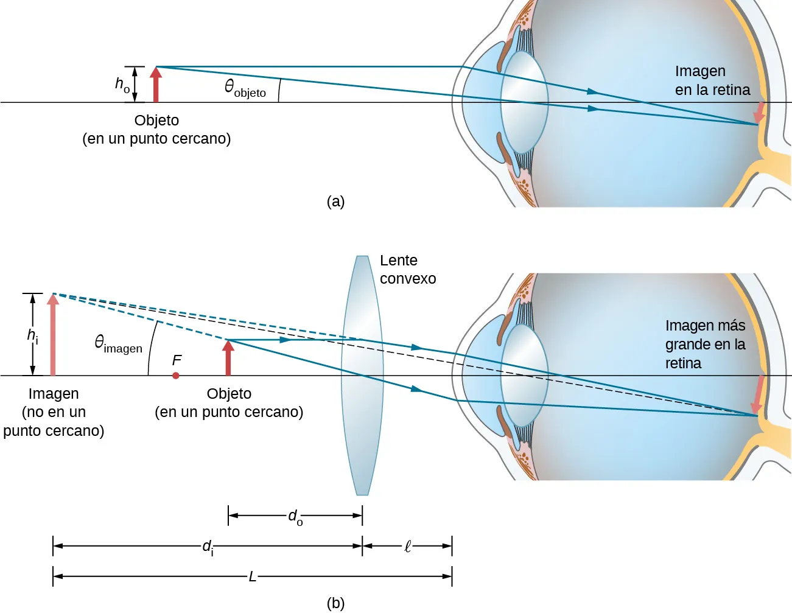
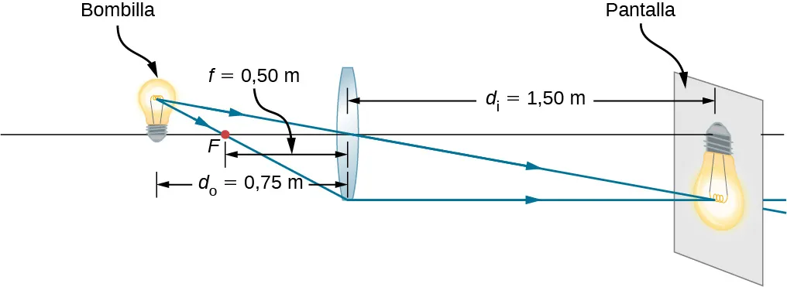
11Dos posiciones de una lente: método de Bessel.
Si un objeto y una pantalla están fijos y separados una distancia \(D\), una lente convergente puede producir una imagen nítida en dos posiciones distintas, siempre que \(D>4f'\). En una posición la imagen es aumentada y en la otra reducida; las distancias objeto-lente e imagen-lente se intercambian.
Si \(d\) es la separación entre las dos posiciones de la lente, la distancia focal imagen puede calcularse mediante:
Este procedimiento es útil cuando se conocen la separación objeto-pantalla y la distancia entre las dos posiciones de enfoque. En DIN, \(D=|s|+s'\) (con \(s<0\) y \(s'>0\)) y \(d\) es la diferencia entre las dos posiciones de la lente.
🧮 Formulario y análisis de expresiones (DIN)
| Expresión | Significado | Unidades y aplicación |
|---|---|---|
| \(\dfrac{1}{s'}-\dfrac{1}{s}=\dfrac{1}{f'}\) | Ecuación de lentes delgadas (DIN). | \(s,s',f'\) en m o cm, pero todos en la misma unidad. |
| \(\dfrac{1}{s'}+\dfrac{1}{s}=\dfrac{1}{f}\) | Ecuación de espejos esféricos (DIN). | \(f=R/2\) con \(R\) negativo en cóncavo y positivo en convexo. |
| \(A=\dfrac{y'}{y}=\dfrac{s'}{s}\) | Aumento lateral, tamaño y orientación (DIN). | Magnitud adimensional; \(A<0\) invertida, \(A>0\) derecha. |
| \(P=\dfrac{1}{f'}\) | Potencia de una lente delgada. | \(f'\) en m; \(P\) en dioptrías (D). |
| \(f=\dfrac{R}{2}\) | Relación entre focal y radio de curvatura de un espejo esférico paraxial. | \(R\) y \(f\) en la misma unidad; signos DIN. |
| \(f'=\dfrac{D^2-d^2}{4D}\) | Método de Bessel para una lente convergente. | \(D\): objeto-pantalla; \(d\): separación entre posiciones de la lente. |
🔭 Problemas resueltos de EBAU/PAU: Tema C6 (criterio DIN) Pulsa para desplegar
Selección de 10 problemas del banco aportado. Ocho corresponden a Castilla y León y dos a Aragón. En cada tarjeta se identifica comunidad, año, convocatoria y número de problema. Todos los cálculos se han adaptado al criterio de signos DIN 1335.
Ejercicio 1Imagen aumentada en una pantalla mediante una lente delgada
Un objeto luminoso de \(12\,\text{mm}\) de altura se encuentra situado a \(2\,\text{m}\) de distancia de una pantalla. Se coloca entre ambos una lente delgada, de manera que sobre la pantalla se forma una imagen tres veces mayor que el objeto.
a) Determine la posición de la lente respecto al objeto y a la pantalla. (1 punto)
b) Calcule la distancia focal de la lente y realice un trazado de rayos mostrando el objeto, la lente y la imagen. (1 punto)
Ejercicio 2Imagen de un insecto con lupa y proyección sobre una pantalla
Un entomólogo utiliza una lupa de \(15\,\text{cm}\) de distancia focal para observar un insecto de \(4\,\text{cm}\) de altura.
a) Si coloca la lupa a \(9\,\text{cm}\) del insecto, ¿dónde se encuentra la imagen? Trace un diagrama de la marcha de rayos en esta situación. Razone si la imagen es real o virtual, si es derecha o invertida, y si es mayor o menor que el insecto. (1 punto)
b) Sin cambiar la situación del insecto, ahora necesita proyectarlo en una pantalla para mostrarlo a su grupo de estudiantes. ¿Qué focal debería tener la nueva lente (colocada donde anteriormente estaba la lupa) para que la altura de la imagen sea de \(20\,\text{cm}\)? (1 punto)
Ejercicio 3¿Puede una lupa proyectar una imagen reducida sobre una pantalla?
Se desea proyectar un objeto sobre una pantalla y que su imagen sea más pequeña que dicho objeto. ¿Podría utilizarse una lupa para conseguirlo? Justifique la respuesta mediante el correspondiente diagrama de rayos. (1 punto)
Ejercicio 4Dos posiciones de una lente convergente para formar una imagen real en la pantalla
Un objeto de \(3\,\text{cm}\) de tamaño se sitúa a \(64\,\text{cm}\) de una pantalla. Entre el objeto y la pantalla se coloca una lente convergente de focal \(12\,\text{cm}\). ¿En qué posiciones hay que situar la lente para que se forme una imagen nítida del objeto en la pantalla? ¿Cuál sería el tamaño de la imagen en cada caso? (1 punto)
Ejercicio 5Lente convergente con objeto entre el foco y la lente: imagen virtual
Se dispone de una lente convergente de distancia focal \(120\,\text{mm}\). Un objeto de \(4\,\text{mm}\) de altura se coloca a \(40\,\text{mm}\) de dicha lente. Determine la distancia que existe entre el objeto y la imagen y calcule la altura de la imagen. (1 punto)
Ejercicio 6Imágenes formadas por una lente divergente: ¿reales, derechas y mayores?
Razone si la siguiente afirmación es cierta o no: «Una lente divergente forma siempre imágenes reales, derechas y mayores que el objeto». Justifique la respuesta mediante un diagrama de marcha de rayos. (1 punto)
Ejercicio 7Posición del objeto en una lupa de aumento 10×
Un coleccionista de minerales utiliza una lupa, de distancia focal \(5\,\text{cm}\), para examinarlos con detalle. Calcule la distancia a la que hay que situar los minerales respecto de la lupa si quiere observarlos con un tamaño diez veces mayor. Represente el correspondiente diagrama de rayos. ¿Cuáles son las características de la imagen obtenida? (1 punto)
Ejercicio 8Distancia pantalla y tamaño de imagen en un proyector
Un proyector de diapositivas tiene una lente convergente de focal \(f=10\,\text{cm}\). Se coloca una diapositiva de \(3\,\text{cm}\) de altura a \(10{,}2\,\text{cm}\) de la lente.
a) Calcule la distancia entre la lente y la pantalla. (0,5 puntos)
b) Calcule la altura de la imagen. (0,5 puntos)
Ejercicio 9Espejos cóncavo y convexo de focal 80 mm: aumento del objeto a 15 cm
Se dispone de un espejo cóncavo de focal \(80\,\text{mm}\) extraído de un pequeño telescopio.
a) Muestre mediante un trazado de rayos dónde se formará la imagen de un objeto situado a \(15\,\text{cm}\) del vértice del espejo y de qué tipo será: ¿real o virtual?, ¿derecha o invertida? (0,5 puntos)
b) ¿Qué aumento proporcionará el espejo con el objeto a la citada distancia? (1 punto)
c) Si sustituimos el espejo cóncavo por uno convexo con la misma focal, ¿cuál sería el resultado del apartado b)? (1 punto)
Ejercicio 10Espejo cóncavo de maquillaje: trazado de rayos y tamaño de imagen
Un espejo de maquillaje cóncavo produce una imagen derecha aumentada del sujeto.
a) Haz un trazado de rayos en el que se demuestre su funcionamiento. ¿De qué tipo es la imagen, real o virtual? (1,25 puntos)
b) Si al colocar la cara a \(20\,\text{cm}\) del espejo (\(0{,}2\,\text{m}\)) se observa una imagen con el doble de tamaño (aumento \(m=2\)), ¿qué tamaño tendrá la imagen de un objeto de \(3\,\text{cm}\) al colocarlo a \(30\,\text{cm}\) del espejo (\(0{,}3\,\text{m}\))? ¿A qué distancia se formará dicha imagen? (1,25 puntos)
IES Valle del Alberche · Física · 2.º de Bachillerato
Tema C6. Formación de imágenes y sistemas ópticos. Preparación EBAU/PAU. Criterio de signos DIN 1335.